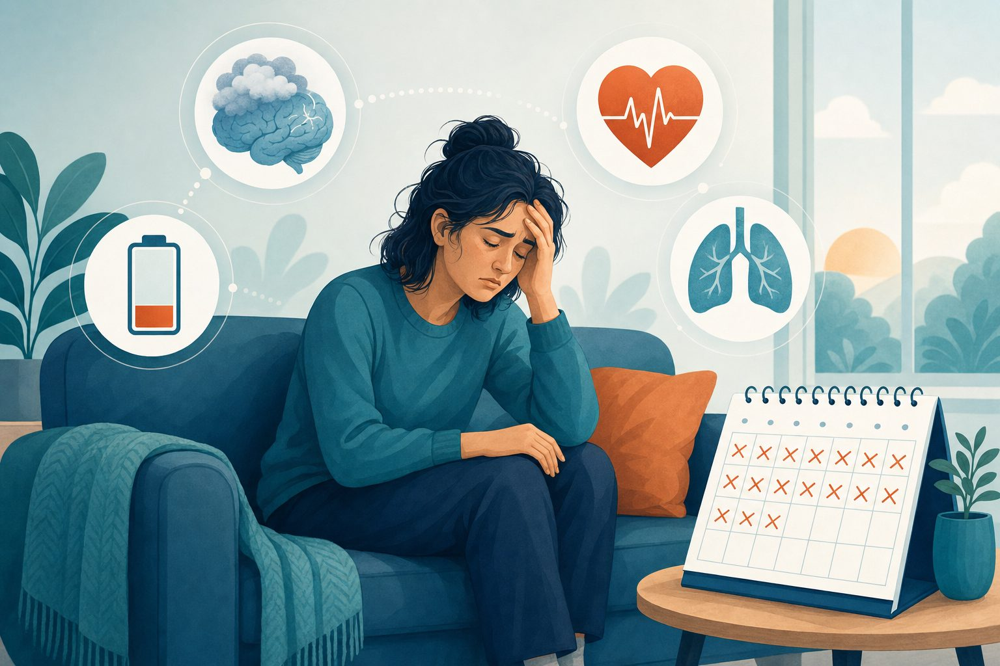
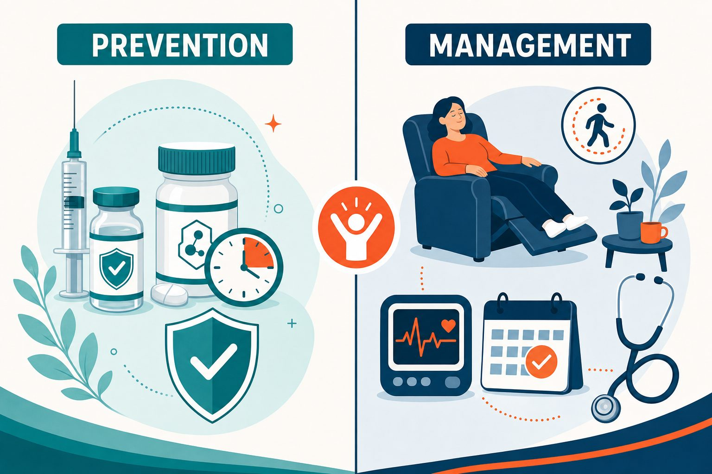

Key Takeaways
- CDC says millions of U.S. adults and children have been affected by Long COVID, and the 2024 NASEM definition requires symptoms or conditions to be present for at least 3 months.[1][2]
- The RECOVER-VITAL trial, published in 2026, found that 15-day and 25-day courses of Paxlovid did not improve Long COVID symptoms compared with placebo.[3]
- Metformin has prevention evidence, not treatment evidence. Started during acute COVID, it lowered provider-diagnosed Long COVID by about 41% in the COVID-OUT trial, and ACTIV-6 found fewer clinician-diagnosed cases but did not meet its main goal. A 2026 trial of metformin as a treatment found no benefit.[4][5][6]
- There is still no proven treatment for Long COVID symptoms, so care is tailored to each person's symptoms.[6][7][8]
- Post-exertional malaise (PEM) is common in Long COVID. CDC says PEM can be eased by pacing: planning activity and rest to stay within your limits.[8][9]

The State of Long COVID in 2026
More than six years after the start of the COVID-19 pandemic, Long COVID is now recognized as a chronic condition affecting millions of people. The good news is that scientific consensus has finally coalesced on what it is and how to study it, anchored by the 2024 National Academies of Sciences, Engineering, and Medicine (NASEM) definition.[1][2]
The harder news is that randomized trials published in 2026 found no benefit from two drugs tested as treatments for people who already had Long COVID: longer courses of Paxlovid and a 2-week course of metformin. The RECOVER-VITAL investigators concluded that new approaches to measuring and treating Long COVID are needed.[3][6]
There is still no proven treatment for Long COVID.[6] But clearer ideas are emerging about what does help and what does not, and that is real progress for people who have been waiting for answers. This guide summarizes where the evidence stands in 2026 and what it means if you are living with Long COVID, recovering from a recent infection, or trying to prevent one.
The 2024 NASEM Consensus Definition
The National Academies committee engaged more than 1,300 participants, with a focus on the patient perspective, and issued a formal definition of Long COVID in 2024.[1]
The definition reads: "Long COVID (LC) is an infection-associated chronic condition that occurs after SARS-CoV-2 infection and is present for at least three months as a continuous, relapsing and remitting, or progressive disease state that affects one or more organ systems."[10]
A few features of this definition matter for everyday care:
- It does not require laboratory confirmation or other proof of the initial SARS-CoV-2 infection.[1]
- It does not list any symptom or condition as ruling Long COVID out, and Long COVID can be diagnosed on clinical grounds.[1]
- The 3-month minimum applies to the label, but clinicians should still recognize and monitor concerning symptoms before the 3-month mark.[1]
For researchers, clinicians, and insurers, a shared definition is a quiet but important step forward. It gives everyone the same starting point.
What the 2025–2026 Trials Showed
Two randomized trials published in 2026 tested drugs as treatments for people who already had Long COVID. Neither found a benefit.[3][6]
RECOVER-VITAL: Longer Paxlovid courses (published 2026)
This NIH-funded trial enrolled adults whose Long COVID symptoms had lasted 12 weeks or more and randomly assigned them to 15 days or 25 days of nirmatrelvir–ritonavir (Paxlovid), or to 25 days of placebo with ritonavir. The idea being tested was that virus persisting in the body might drive ongoing symptoms. Among 959 participants grouped by cognitive, autonomic, or exercise-related symptoms, neither Paxlovid course produced a significant benefit over placebo in any group.[3]
The investigators concluded that additional approaches to measuring symptom burden and treating Long COVID are needed. These results do not support longer Paxlovid courses as a Long COVID treatment.[3]
Metformin as a treatment (published March 2026)
A double-blind trial at two hospitals in South Korea randomly assigned 396 adults with persistent post-COVID symptoms, on average about 10 months after infection, to metformin, ursodeoxycholic acid, or placebo for 14 days. Recovery at 8 weeks was similar in all three groups. The authors note the findings may not apply to people with more severe or persistent Long COVID.[6]
The NIH RECOVER-ENERGIZE trial did not test metformin. Its registry record lists personalized cardiopulmonary rehabilitation and education as the interventions, aimed at exercise intolerance in Long COVID.[11]
The metformin distinction
Here is the critical nuance. Metformin did not help as a short treatment for established Long COVID, but trials that started it during acute COVID point to a prevention effect. In the COVID-OUT trial of adults aged 30 to 85 with overweight or obesity, enrolled within 7 days of symptom onset, metformin lowered the rate of Long COVID diagnosed by a medical provider over 10 months by about 41% compared with placebo (6.3% vs 10.4%), a prespecified secondary outcome. In those who started within 3 days of symptoms, the hazard ratio was 0.37.[4] In the ACTIV-6 trial of lower-risk adults, metformin did not meet its main goal of reducing COVID symptoms at 6 months, but clinician-diagnosed Long COVID, a secondary outcome, was lower (risk ratio 0.495).[5]
In other words, the prevention signal comes from secondary outcomes in two trials, while the treatment evidence so far is null. Any benefit seen so far came from starting metformin during acute infection, not after Long COVID had developed.[4][5][6]

Prevention: What Actually Works
COVID-19 vaccination remains the best-supported way to prevent Long COVID. CDC describes it as "the best available tool to prevent Long COVID, including in children."[2]
Metformin started during acute infection lowered provider-diagnosed Long COVID by about 41% over 10 months in COVID-OUT, with a hazard ratio of 0.37 in the subgroup that started within 3 days of symptoms.[4] ACTIV-6 found fewer clinician-diagnosed cases but did not meet its main goal.[5] Metformin's FDA labeling covers improving blood sugar (glycemic) control, so using it to prevent Long COVID is off-label.[12]
Avoiding reinfection matters. CDC notes that people can be reinfected multiple times and that each infection carries a risk of developing Long COVID.[2]
Management: A Symptom-Targeted Approach
With no proven treatment for Long COVID itself, management focuses on the dominant symptoms. CDC advises tailoring treatment to each person's specific symptoms or conditions, including FDA-approved or over-the-counter medications.[6][8]
Pacing for patients with post-exertional malaise (PEM)
PEM is the worsening of symptoms after even minor physical or mental exertion, typically 12 to 48 hours later, and it can last days or weeks. CDC notes that PEM is common in Long COVID and that these patients may benefit from approaches used for PEM and ME/CFS.[8] For PEM, CDC describes activity management, or pacing: learning your limits for physical and mental activity, planning activity and rest to stay within them, and avoiding "push and crash" cycles.[9]
Graded exercise for patients without PEM
A 2025 systematic review and network meta-analysis of 33 randomized trials (2,895 participants) found that exercise therapy improved lung function, six-minute walk results, breathlessness scores, and mental health scores in post-COVID syndrome. Its inclusion criteria did not address PEM.[13] That is why the caveat matters: CDC's ME/CFS guidance warns that standard exercise recommendations for healthy people can substantially harm patients with ME/CFS, and that activity should be increased cautiously, with monitoring.[9]
POTS and autonomic dysfunction
CDC lists dysautonomia among the conditions whose symptom management approaches may help people with Long COVID.[8] The NIH RECOVER-AUTONOMIC trial was designed to test intravenous immunoglobulin (IVIG), ivabradine, and coordinated nonpharmacologic care for postural orthostatic tachycardia syndrome (POTS) in adults with Long COVID.[14] Medication choices for POTS are best made with your clinician.
Brain fog
In the RECOVER-NEURO randomized trial of 328 adults with cognitive Long COVID symptoms, online cognitive training, a structured cognitive rehabilitation program, and transcranial direct current stimulation did not outperform comparison activities after 10 weeks, although all groups improved somewhat over time.[15] For day-to-day management, CDC's ME/CFS guidance advises planning and monitoring mental activity to avoid overexertion and planning rest after demanding mental tasks.[9]
Sleep, mental health, and pain
Sleep problems, mood symptoms, and pain are treated according to the specific symptom. CDC notes that Long COVID treatment can include FDA-approved or over-the-counter medications.[8]
| Intervention | Goal | What 2025–2026 Evidence Shows | Practical Status |
|---|---|---|---|
| COVID-19 vaccination | Prevent Long COVID | CDC calls it the best available tool to prevent Long COVID[2] | Widely available |
| Metformin started during acute COVID (trials enrolled within 7 days of symptoms) | Prevent Long COVID | About 41% fewer provider-diagnosed cases in COVID-OUT; ACTIV-6 missed its main goal but had fewer clinician-diagnosed cases[4][5] | Off-label; discuss with clinician[12] |
| Paxlovid 15–25 day course as treatment | Treat established Long COVID | No benefit in RECOVER-VITAL (published 2026)[3] | Not supported by trial evidence |
| Metformin as treatment | Treat established Long COVID | No benefit from a 14-day course in a 2026 randomized trial[6] | Not supported by trial evidence |
| Pacing for PEM-positive Long COVID | Prevent symptom crashes | CDC: PEM can be mitigated by activity management (pacing)[9] | Self-directed with clinician support |
| Graded exercise for non-PEM Long COVID | Improve fitness/mood | Better lung function, walk test, and mental health scores in a 2025 review of 33 trials[13] | Carefully titrated under supervision |
| Symptom-specific care for POTS, sleep, pain | Symptom control | CDC: tailor treatment to specific symptoms or conditions[8] | Routine clinical management |
What This Means for You
If you have COVID-19 right now
Make sure you are up to date on vaccination if you can be. Ask your clinician about antiviral therapy if you are eligible. Because the prevention trials started metformin within 7 days of symptom onset, a conversation about early metformin may be worth having, recognizing this is an off-label use.[4][5][12]
If you have established Long COVID
Longer Paxlovid courses and a 2-week course of metformin did not help in 2026 trials, so neither is supported as a treatment. Symptom-targeted management is today's standard.[3][6][8]
Whether you choose telehealth or in-person care depends on what you need at each stage:
- Telehealth visits work well for symptom tracking, pacing coaching, medication management, mental health support, and care coordination between specialists.
- In-person care is necessary for cardiopulmonary workup, autonomic testing (such as tilt-table or QSART), physical therapy assessment, and multidisciplinary Long COVID clinics.
- Most patients benefit from a combination of both. Neither path is "better," because they answer different questions.
If your symptoms persist despite initial management, ask about referral to a specialty Long COVID clinic or other supportive services.[8]
If you suspect Long COVID
The NASEM definition requires symptoms to be present for at least 3 months before the Long COVID label applies, but concerning symptoms should still be checked before then.[1] Document your symptoms and their pattern. The definition recognizes continuous, relapsing and remitting, or progressive courses, and Long COVID can be diagnosed on clinical grounds.[1] Be cautious of "miracle cure" marketing; trials have not yet produced a proven treatment.[6][7]
Red Flags Requiring Urgent Evaluation
Most Long COVID symptoms develop over weeks and can be managed without urgency. A few signs, however, warrant urgent in-person evaluation rather than a telehealth visit:
- Severe shortness of breath, chest pain, or pre-syncope (near-fainting)
- New heart palpitations with dizziness
- Focal neurological symptoms such as weakness on one side, speech changes, or vision loss
- Worsening cognitive function with safety concerns (driving, work, medications)
- Severe depression or thoughts of self-harm
If any of these apply, go to an emergency department or call 911. Telehealth is the right tool for many things, but not for these.
References
- National Academies of Sciences, Engineering, and Medicine. "A Long COVID Definition: A Chronic, Systemic Disease State with Profound Consequences." Consensus Study Report. 2024. Accessed November 7, 2026. nationalacademies.org
- Centers for Disease Control and Prevention. "About Long COVID." Page dated May 6, 2026. Accessed November 7, 2026. cdc.gov/long-covid
- Baden LR, Shah NS, Liu STH, et al. Nirmatrelvir-ritonavir targeting viral persistence in post-COVID-19 condition (long COVID) in the USA (RECOVER-VITAL): a randomised, double-blind, placebo-controlled, phase 2 trial. Lancet Infect Dis. 2026. doi:10.1016/S1473-3099(26)00406-8. PubMed 42673984
- Bramante CT, Buse JB, Liebovitz DM, et al. Outpatient treatment of COVID-19 and incidence of post-COVID-19 condition over 10 months (COVID-OUT): a multicentre, randomised, quadruple-blind, parallel-group, phase 3 trial. Lancet Infect Dis. 2023;23(10):1119-1129. PubMed 37302406
- Bramante CT, Stewart TG, Boulware DR, et al. Metformin on the Presence of COVID-19 Symptoms 6 Months after Infection: The ACTIV-6 Randomized Clinical Trial. Clin Infect Dis. 2026. doi:10.1093/cid/ciag335. PubMed 42240559
- Lim SY, Lee J, Chang E, et al. Neither Metformin nor Ursodeoxycholic Acid Effectively Treats Postacute Sequelae of COVID-19: A Randomized Clinical Trial. Ann Intern Med. 2026;179(4):478-485. PubMed 41771135
- Baptista SN, Atkins T, Chakraborty S, et al. Candidate treatments for long COVID: a narrative review of expert and patient-driven priorities. Front Med (Lausanne). 2026;13:1734600. pmc.ncbi.nlm.nih.gov
- Centers for Disease Control and Prevention. "Long COVID Clinical Guidance." Last updated March 9, 2026. Accessed November 7, 2026. cdc.gov
- Centers for Disease Control and Prevention. "Strategies to Prevent Worsening of Symptoms" (ME/CFS clinical care). Last reviewed May 10, 2024. Accessed November 7, 2026. cdc.gov
- National Academies of Sciences, Engineering, and Medicine. "Federal Government, Clinicians, Employers, and Others Should Adopt New Definition for Long COVID." News release. Last updated June 11, 2024. Accessed November 7, 2026. nationalacademies.org
- ClinicalTrials.gov. "RECOVER-ENERGIZE: A Platform Protocol for Evaluation of Interventions for Exercise Intolerance in Post-Acute Sequelae of SARS-CoV-2 Infection (PASC)." NCT06404060. Accessed November 7, 2026. clinicaltrials.gov
- DailyMed. Metformin hydrochloride tablets prescribing information (Granules Pharmaceuticals Inc.). Revised June 2026. Accessed November 7, 2026. dailymed.nlm.nih.gov
- Du S, Cui Z, Xu X, et al. Clinical efficacy of exercise in the treatment of post-COVID-19 syndrome: a systematic review and network meta-analysis. Front Physiol. 2025;16:1656713. doi.org
- Fudim M, Novak P, Taub PR, et al. Design and rationale of RECOVER-AUTONOMIC: A randomized platform trial evaluating interventions for Long COVID postural orthostatic tachycardia syndrome. Am Heart J. 2026;296:107384. PubMed 41720282
- Knopman DS, Koltai D, Laskowitz DT, et al. Evaluation of Interventions for Cognitive Symptoms in Long COVID: A Randomized Clinical Trial. JAMA Neurol. 2026;83(1):49-59. PubMed 41212544